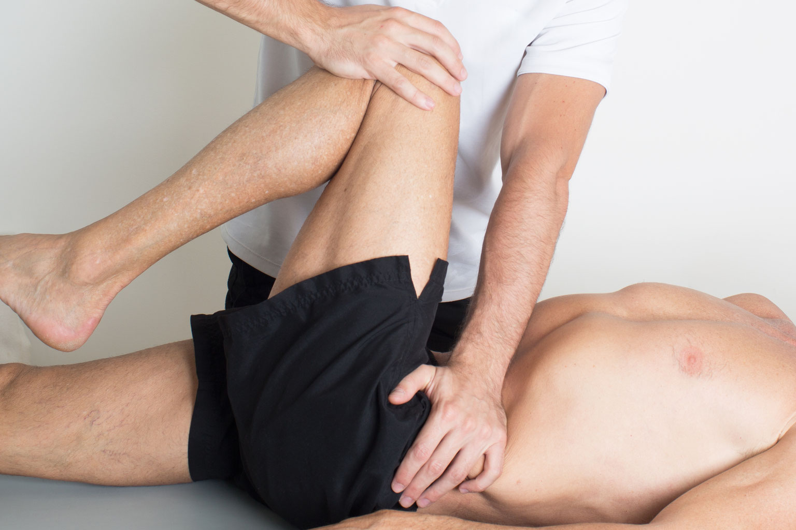
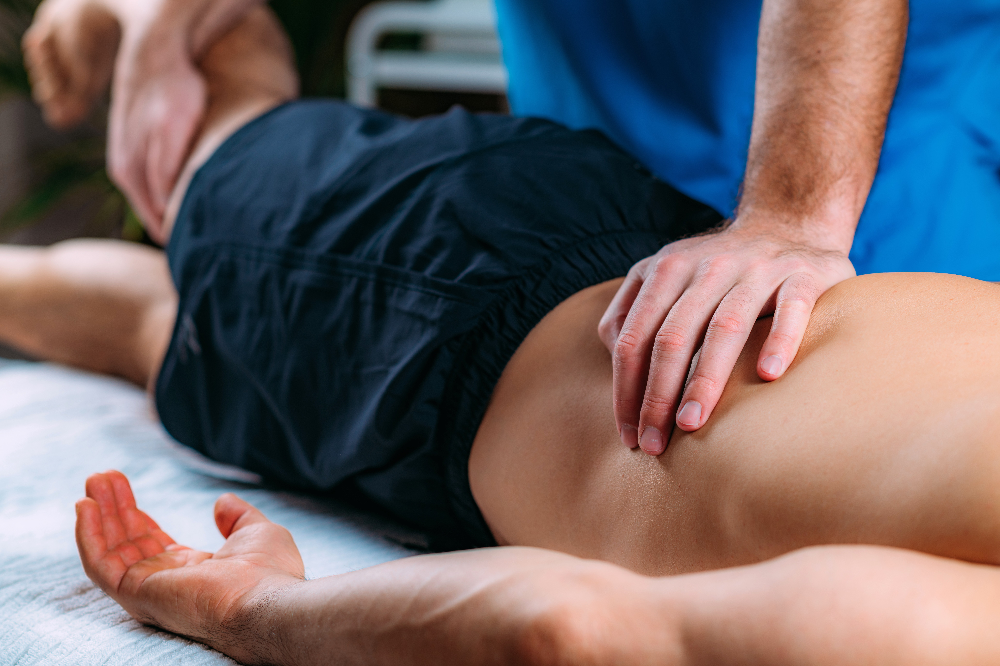
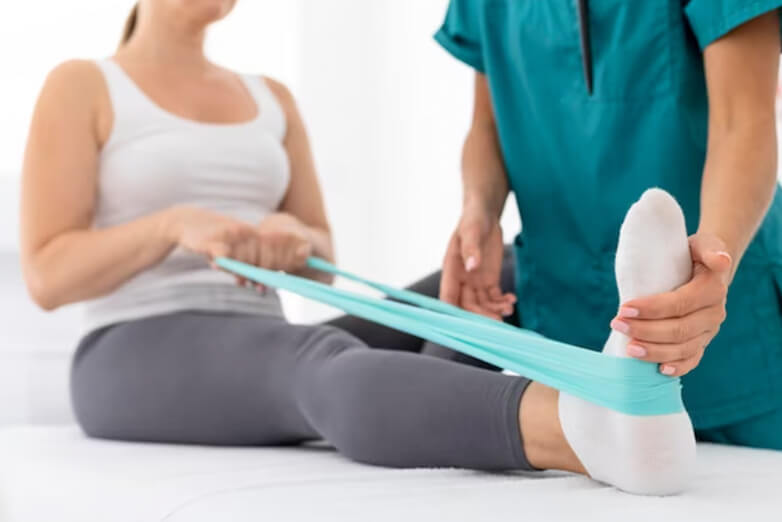
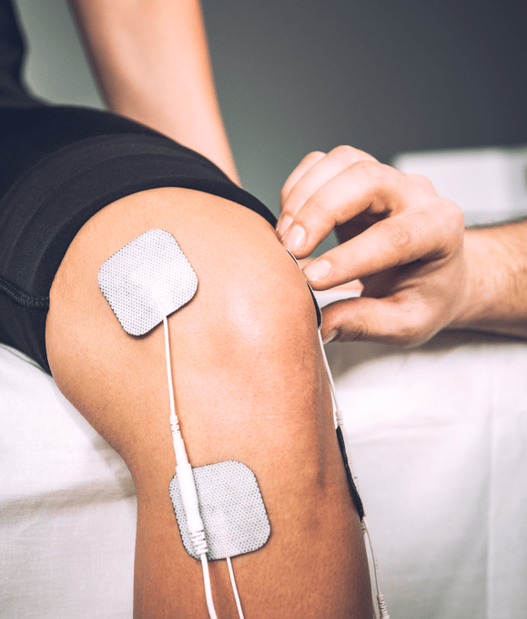
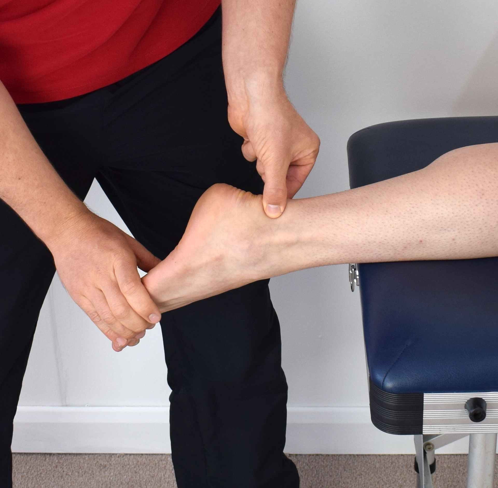
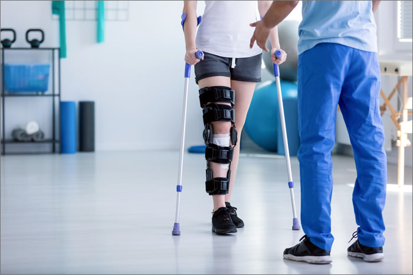
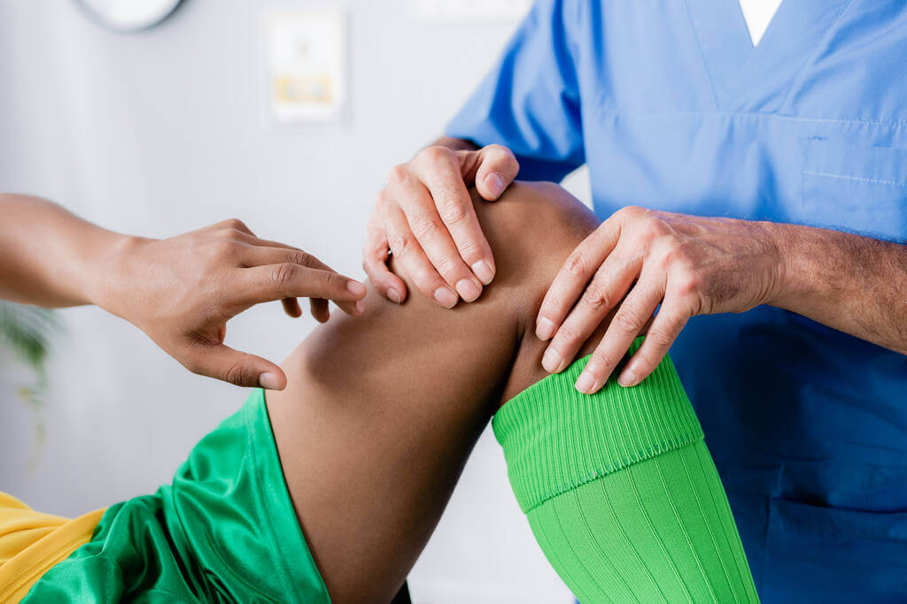

Nuestros Servicios
Dolor de Nervio Ciático
Tratamiento especializado para aliviar el dolor intenso causado por la compresión o irritación del nervio ciático.

Hernias Discales
Tratamientos especializados para aliviar el dolor y mejorar la movilidad en casos de hernias discales en la columna vertebral.

Lesiones Deportivas
Rehabilitación para lesiones deportivas, ayudando a recuperar la fuerza y flexibilidad necesarias para volver a la actividad física.

Dolor de Espalda
Evaluación y terapias personalizadas para el dolor crónico o agudo en la espalda, incluyendo la zona lumbar y dorsal.
Rodilla
Rehabilitación y tratamiento para lesiones, dolor o incomodidad en la rodilla, promoviendo su funcionalidad y recuperación.

Esguinces
Atención integral para la recuperación de esguinces, con un enfoque en la movilidad y la reducción del dolor.

Luxaciones y Subluxaciones
Tratamiento para la recuperación de luxaciones o subluxaciones articulares, restaurando la función y reduciendo el dolor.
Post Operados
Recuperación postquirúrgica mediante terapias que mejoran la movilidad, fuerza y funcionalidad después de una operación.

Masajes Deportivos
Masajes especializados para aliviar tensiones, mejorar la circulación y promover una recuperación rápida después del ejercicio físico.
